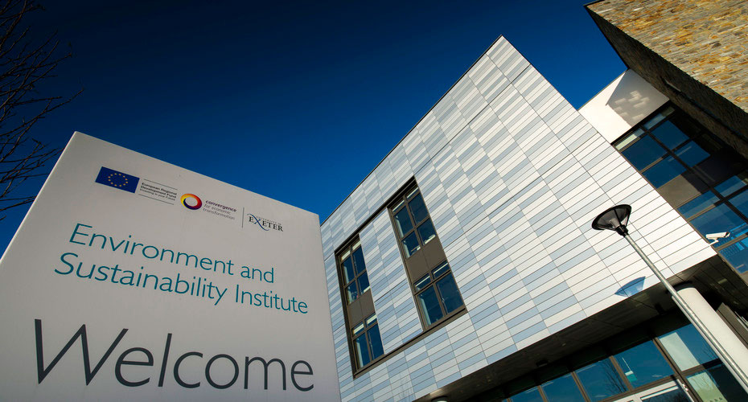

The University of East London Sustainability Research Institute (UELSRI) was established as part of the 7 University of East London’s commitment to advancing research in sustainability and environmental innovation. Since its formation, the institute has brought together expertise from across multiple disciplines to address complex global challenges. Over time, UELSRI has developed strong partnerships with industry, government, and local communities, allowing it to expand its research impact and contribute to practical, real-world solutions. Its continued growth reflects the university’s focus on innovation, collaboration, and creating meaningful change through research.
